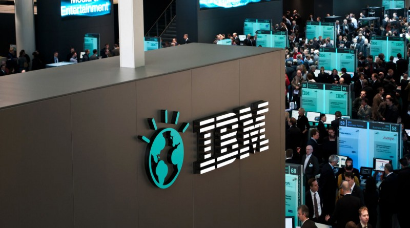

A Story of a Developer Advocate
who used to be a Hairstylist
IBM Developer Advocate Taiji HAGINO / @taiponrock
Introduction
about me
Hairstylist
1997 ~ 1998
After graduation I became a hairstylist, and started work at Omotesando.
very interesting
had communication everyday

but I got motorcycle accident!
1 month hospitalization :(
!? Come up with new idea!
What kind of job is good for me?
Yes, I decided to change my job!

Musician
1998 ~ 2001
After hairstylist, I became a musician and started work as player and creater.
very interesting
refined my taste everyday
Playing in a Rock Band
belonged to a music office

And Make Contents of Book
for BGM of 3D Objects
I've spent exciting days
but we wanted different things during me and member/office...
So I decided to change my job!
Web Designer
2001
After musician, I became a web designer...
Wow! Really?
No
Programmer
2001 ~ 2003
I don't know why became a programmer!!
SQL, CLI, Coding, and more...
Making Flash Contents
great interective contents
Making and Management own EC-site
Bicycle Store named Takahashi-Town
And then I wanted to be freelance Engineer!
Freelance ~ Package Vendor
2003 ~ 2005
So next I joined a package vendor spined out from Oracle
Gluons Inc.
Client Flash and Server-side Java
Making EAI Tool with Flash Remoting
...but
went belly up!!!
I finally decided to make my own company!!
Manage my own company
2005 ~ 2006
Sales, Consalting, Development, and more
Acculate Systems Ltd.
ideal
I am a president :)
reality
I am a president...? :(
Just kidding, so interesting experience for me!
Return back to an employee
2006 ~ 2017
System Integrator
Mitsui Knowledge Industry
Business Devlopment
Open Innovation, Joint Venture, etc...
IT Consultation
Marketing, Development

R&D
Research, Development
Technical Evangelist
Marketing, Development, Communication
Of course DevRel!!
Microsoft MVP
External Evengelist of Microsft Products
Category: Visual Studio and Development Technologies
I wanted to up more in the DevRel
So Change!
Yup, I decided to change my job again!
Developer Advocate
2017 ~
Cloud Platform Vendor
IBM BlueHub

Conclusion
8 Factors for Developer Advocate
Marketing
Research
Development
Business Development
Community
Code Sharing
Technical Support
Developer Relations
Still now DevRel Meetup core member
Why don't you go to DevRelCon Tokyo!!
THE END
IBM Developer Advocate Taiji HAGINO / @taiponrock